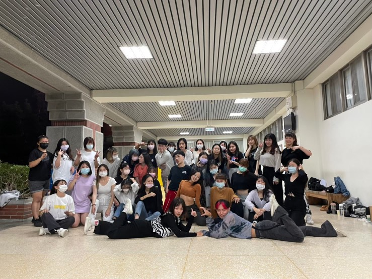
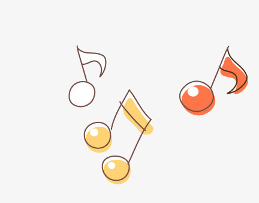

<<關於社團>>

我高中時曾參加過熱舞社，那時候會參加熱舞社只是單純想要減肥，後來就跳出興趣來了，所以我大學時又繼續參加熱舞社，左邊的照片是我大學上完社團課之後的大合照，雖然我跳舞沒有很強，但是我還是積極參與社課，希望我能有所進步，而且在練舞時能使我放鬆身心，感覺整天的壓力都沒有了，真的很喜歡練舞的感覺。
<<關於音樂>>

我在無聊時，最喜歡做的事就是聽音樂，聽音樂是繼跳舞之後第二個能讓我減輕壓力的休閒娛樂。我最喜歡聽中國古風音樂，例如：燕無歇、虞兮嘆、莫問歸期等等，我覺得他們歌詞的用字遣詞很優美，不像有些歌的歌詞用字比較粗魯，中國古風歌曲聽起來讓我比較舒服，也比較能讓我放鬆。
<<關於遊戲>>
左邊的照片是我玩最久的手遊「傳說對決」，當初看到身邊的朋友一個個都在打這款遊戲，為了加入他們我才去下載來玩，玩到現在也有5年了，雖然有許多的朋友都紛紛退遊，但是我對傳說對決的熱情並不會因為朋友的退出而減少，我覺得傳說對決是最好拿來消遣時間的遊戲，有時候我可以打一整天的傳說對決都不用休息，有沒有覺得我很厲害呢！